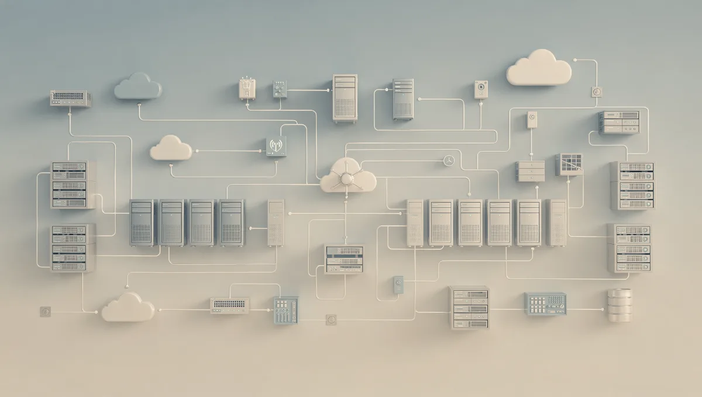

Quantum-safe traffic, tunnels and backups, on the systems you already run.
Four products that add NIST post-quantum cryptography in front of your services, between your sites and around your backups. Your applications stay as they are.
The scan grades your public TLS and SSH endpoints and tells you what to fix first.
Readiness reportexample, 4 endpoints
api.example.com:443X25519MLKEM768, ML-DSA-65
A
www.example.com:443post-quantum, classical still allowed
B
vpn.example.com:443TLS 1.2, RSA-2048
C
ssh://bastion:22curve25519, no ML-KEM
C
Built onOpenSSL 3.5strongSwan 6.1WireGuardKubernetesAWS KMSAWS, Azure, Google Cloud
Why now
Why this can't wait for the quantum computer
Nobody can break RSA or elliptic curves with a quantum computer yet. The problem is the data being recorded in the meantime, and the dates regulators have already set.
Today
Traffic captured now can be stored and decrypted once a large enough quantum computer exists. Anything that must stay secret for years is already at risk.
2030
NIST IR 8547 deprecates RSA and elliptic-curve keys at 112-bit security. NSA CNSA 2.0 expects VPNs and network equipment to have moved by then.
2035
Those algorithms are disallowed. Certificates, VPN gateways and archives you set up this year will still be in service.
The suite
Four products, one certificate authority
Each one works on its own. Together they share identities, revocation and one report for your auditors.
For web, API and database traffic
TLS 1.3 + mTLS
A post-quantum front door for any service, and certificates for every machine that talks to it.
What you get
X25519MLKEM768 key exchange and ML-DSA certificates, with no change to the service behind it
Browsers keep working: they get a classical certificate, everything else gets ML-DSA
Mutual TLS, with revoked machines refused at their next connection
Behind the scenes
Your own certificate authority, with keys in a file, AWS KMS or an HSM
Machines enrol and renew by themselves over EST or ACME
Most teams want to see it working on one real service before anything else. This is a typical first two weeks.
Day 1Readiness scan
We grade your public endpoints together and agree what to protect first.
Day 2Your certificate authority
An ML-DSA root kept offline, and an issuing CA on your side.
Days 3–5One service behind the edge
Usually an API or a database, in transition mode so nobody is locked out.
Week 2VPN and backups
Two sites on the post-quantum VPN, and Vault on your backup job.
ThenThe report
A second scan and an evidence report you can hand to audit.
Readiness grades
What the readiness grades mean
Every endpoint in the scan gets one letter. This is what each one means and what to do about it.
APost-quantum only
Every connection uses a post-quantum key exchange.
Nothing to do. Keep it on the scan.
BPost-quantum preferred
Modern clients get post-quantum protection; older ones still connect classically.
Fine while clients migrate. Plan the switch to A.
CClassical only
Traffic recorded today can be decrypted later. This includes servers that only speak TLS 1.2.
Put the TLS edge in front of it first.
FNot reachable
The scan could not connect, or the port does not speak TLS.
Check the address, or scan from inside your network.

Nothing changes for the people using your services.
The edge sits in front of the application. Browsers, mobile apps and older clients keep connecting while you move each one to post-quantum at your own pace.
Compatibility
Tested with the software you run
Each of these runs behind the suite in our automated tests, on every change, and is checked with independent clients.
nginxChecked with the OpenSSL 3.5 client, and with 300 clients at once
Browsers and curlClassical certificate for them, ML-DSA for everyone else, same port
PostgreSQLpsql through a post-quantum tunnel with mutual TLS
Redisredis-cli through the same tunnel, unchanged
MQTT (Mosquitto)Readings published and received end to end
strongSwan 6.1ML-KEM tunnels, key rotation, a revoked branch cut off
WireGuardLaptop traffic, key rotation, a revoked user cut off
certbotAn ML-DSA certificate issued over ACME
KubernetesThe Helm chart serving a post-quantum request in a cluster
Questions
Questions we get asked
Do we need to change our applications?
No. The TLS edge runs in front of the service, as a separate machine or as a Kubernetes sidecar, and forwards plain traffic to it. Clients that cannot speak post-quantum TLS yet can reach the service through a second edge on their side.
Will our website still work in browsers?
Yes. Browsers already use the post-quantum key exchange, but they cannot check ML-DSA certificates yet. In transition mode the edge gives them a normal ECDSA or RSA certificate and gives ML-DSA to every client that can use it, on the same port.
What if one of the new algorithms turns out to be weak?
Every connection combines a classical algorithm with a post-quantum one, so an attacker has to break both. If either holds, your data stays protected.
Where do our keys live?
On your systems, or in your own AWS KMS or HSM. We never hold your keys, and nothing depends on a service we run.
Is it FIPS 140-3 validated?
Not yet. It uses the FIPS 203, 204 and 205 algorithms through OpenSSL 3.5, but the product has not been through FIPS 140-3 validation.
Start with a free readiness scan
Tell us which domains to look at. We send back the graded report and walk you through it in a 30-minute call.